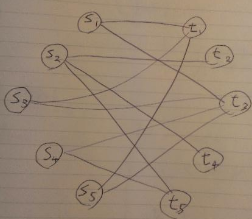
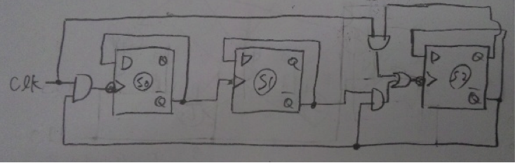
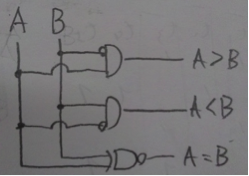
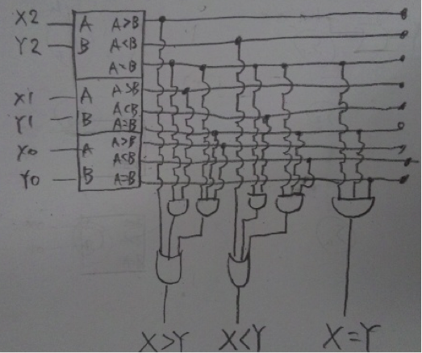
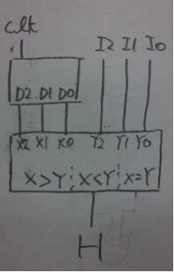

n!通り

生徒sと先生pのペアを(s,p)と表すとすると、 (s1,t1) , (s2,t2) , (s3,t3) , (s4,t5) がp-matchの一つ。
１：大きさnの整数型の２次元配列を用意する。配列にはそれぞれのtの入次数を格納するのに使用する。
２：s1～snまでのm本の辺に対応する先生の入次数をインクリメントする。
３：Vから任意の生徒頂点sを一つ取り出す。
４：その生徒頂点sの持つ全ての辺の先の先生の入次数を比較し、最も少ないものを選択。この時対象の先生が頂点集合Vに無い場合は採用しない。
５：選択した先生の頂点をVから除く。
６：Vに生徒頂点が一つ以上ある場合は３に戻る。
ステップ2はO(m)の計算量。
ステップ４は辺の数分、つまりはmに比例する比較が必要となるので、計算量O(m)。
(s1,t7) , ２(s2,t1) , ２(s3,t5) , ２(s4,t4) , ２(s5,t3) , ３(s6,t2) , ４(s7,t6)
(s1,t1) , (s2,t2) , (s3,t7) , (s4,t6) , (s5,t3) , (s6,t5) , (s7,t4)
(1)残った生徒or先生のなかで、希望順位の最も高い相手と、相手から自分への順位を合計したものをそれぞれ保持する。
(2)最も値が小さくなるような組み合わせを選択して組を作る。
(3)該当する生徒と先生を各生徒の順位表から削除する。
(4)組になっていない生徒or先生がいる場合は(1)に戻る。
計算量
(1) 生徒の順位表[最も順位の高い先生] + 先生の順位表[生徒の順位表[最も順位の高い先生] ] の計算を全ての組み合わせnに対して行うので O(n)
(2) (1)の計算過程で暫定解より小さい解が出たらその組み合わせに更新すればよい。
(3) サイズnの生徒の順位表、先生の順位表に対して行う。 サイズnから削除する添字の検索：O(n)
上記処理をサイズnの生徒と先生の表で行うため、2*O(n^2) = O(n^2)
以上よりO(n)+O(n^2) = O(n^2)
・発音採点機能
現在日本の英語教育で足りないのはスピーキング能力である。受講者に積極的に発音させ、それを自動的に採点化、採点結果、見本音声を出力する。現在の音声認識技術の発展は目覚ましく、不可能では無いはずである。
・インターネット受講システム
実際に学校に出向かずに、インターネット接続環境があればいつでもどこでも世界中の先生に授業をしてもらう。スマートフォンを受講媒体として使用することも可能であろう。
３ビットをS2S1S0とすると、

まず1bit比較器を作成する。真理値表は
| A | B | A > B | A=B | A < B |
| 0 | 0 | 0 | 1 | 0 |
| 0 | 1 | 0 | 0 | 1 |
| 1 | 0 | 1 | 0 | 0 |
| 1 | 1 | 0 | 1 | 0 |
となるので、 (A>B) = A*￢B , (A=B) = not(A xor B) , (A<B) = ￢A*B より、

２つの３ビット入力を(X2,X1,X0)、(Y2,Y1,Y0)とすると、１bit比較器を３つ組み合わせることで、

※ 1ビット比較器を２つ組み合わせて２ビット比較器を設計し、さらに2ビット比較器を２つ組み合わせて４ビット比較器を設計して解いたほうが１００倍楽。
(1)のカウンタと(2)の比較器を使って設計すると、

未解答